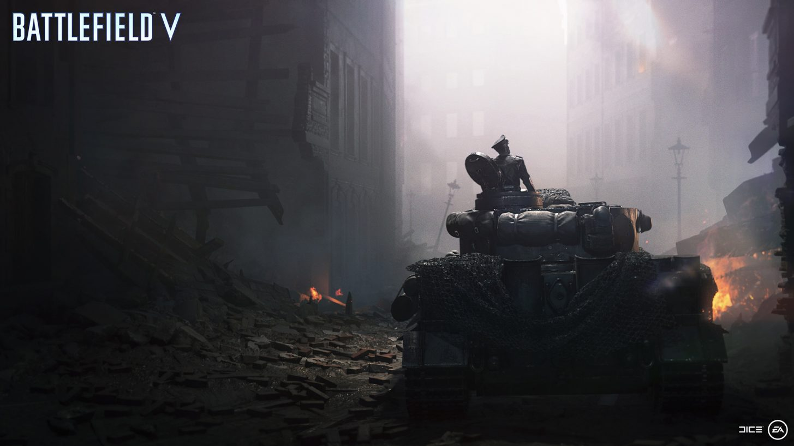

| Character | Peter Müller |
|---|---|
| Country | Germany |
| Unit | Tiger I Tank Crew |
| Location | Cologne, Germany |
| Year | 1945 |
| Mission | Defend the Rhine |
Peter Müller adalah komandan tank Tiger I yang memimpin krunya dalam pertempuran terakhir Jerman di Front Barat.
Di tengah kehancuran negaranya, Müller mulai mempertanyakan makna kehormatan, tugas, dan propaganda yang selama ini ia percayai.
Pertempuran di Cologne menjadi saksi bagaimana kru tank ini berjuang bukan lagi untuk kemenangan, tetapi untuk bertahan hidup di akhir perang yang tak terelakkan.
